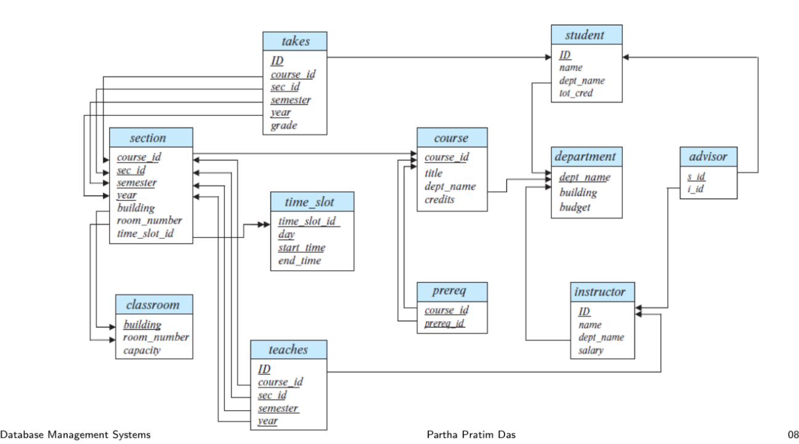

DATA DEFINITION LANGUAGE (DDL)
Here, we start by creating the University Database schema (given below) used in the recorded lectures to give the essence of the SQL Data Definition Language (DDL) commands in SQL.
Schema for University Database

DDL consists of: * Schema * Domain of attributes * char(n) * varchar(n) * int * smallint * numeric(p,d) * real, double precision * float * Integrity Constraints * not null * primary key * foreign key references r (Referential Integrity Constraint)
Some more datatypes in SQL:
* date: Dates, containing a (4 digit) year, month and date.
Example: date '2005-7-27'
* time: Time of day, in hours, minutes and seconds.
Example: time '09:00:30' time '09:00:30.75'
* timestamp: date plus time of day.
Example: timestamp '2005-7-27 09:00:30.75'
* interval: period of time.
Example:interval '1' day
* Subtracting a date/time/timestamp value from another = interval value.
* Interval values can be added to date/time/timestamp values.
SYNTAX of table creation
Creating a table:
create table r (AD1, A2D2, . . . , AnDn),
(integrity-constraint1),
. . .
(integrity-constraintk));
where
r = relation name.
Ai = Attribute name.
Di = Domain name.
Let us start creating the University Database.
Creating classroom table.
create table classroom
(building varchar(15),
room_number varchar(7),
capacity numeric(4,0),
primary key (building, room_number)
);
The above table has 3 columns:
| Attribute | Domain | Integrity Constraint |
|---|---|---|
| building | varchar(15) | primary key (composite) |
| room_number | varchar(7) | primary key (composite) |
| capacity | numeric(4,0) | - |
- Here, both building and room_number uniquely identify every tuple present in the table classroom.
- The domain type of varchar(15) of building means that a user can add any variable length string with a maximum limit of 15 characters.
- The domain type numeric(4,0) of capacity allows a total of 4 digits to be stored out of which 0 digits should be on the right hand side of the decimal point.
Creating table department
create table department
(dept_name varchar(20),
building varchar(15),
budget numeric(12,2) check (budget > 0),
primary key (dept_name)
);
The above table has 3 columns:
| Attribute | Domain | Integrity Constraint |
|---|---|---|
| dept_name | varchar(20) | primary key |
| building | varchar(15) | - |
| budget | numeric(12,2) | check (budget > 0) |
- Here the integrity constraint check (budget > 0) ensures that all the values in the budget column should be greater than 0.
Creating table course
create table course
(course_id varchar(8),
title varchar(50),
dept_name varchar(20),
credits numeric(2,0) check (credits > 0),
primary key (course_id),
foreign key (dept_name) references department (dept_name)
on delete set null
);
The above table has 4 columns:
| Attribute | Domain | Integrity Constraint |
|---|---|---|
| course_id | varchar(8) | primary key |
| title | varchar(50) | - |
| dept_name | varchar(20) | foreign key (dept_name) references department (dept_name) on delete set null |
| credits | numeric(2,0) | check (credits > 0) |
- Here, the attribute dept_name acts as a foreign key that refers to the primary key dept_name of the department table. It is used to link tables in SQL.
- The integrity contraint on delete set null acts on the foreign key dept_name. If the records in the base table department are deleted, the corresponding foreign key records are not deleted, they are instead, updated to NULL.
Creating table instructor
create table instructor
(ID varchar(5),
name varchar(20) not null,
dept_name varchar(20),
salary numeric(8,2) check (salary > 29000),
primary key (ID),
foreign key (dept_name) references department (dept_name)
on delete set null
);
The above table has 3 columns:
| Attribute | Domain | Integrity Constraint |
|---|---|---|
| ID | varchar(5) | primary key |
| name | varchar(20) | not null |
| dept_name | varchar(20) | foreign key (dept_name) references department (dept_name) on delete set null |
Creating table section
create table section
(course_id varchar(8),
sec_id varchar(8),
semester varchar(6)
check (semester in ('Fall', 'Winter', 'Spring', 'Summer')),
year numeric(4,0) check (year > 1701 and year < 2100),
building varchar(15),
room_number varchar(7),
time_slot_id varchar(4),
primary key (course_id, sec_id, semester, year),
foreign key (course_id) references course (course_id)
on delete cascade,
foreign key (building, room_number) references classroom (building, room_number)
on delete set null
);
The above table has 7 columns:
| Attribute | Domain | Integrity Constraint |
|---|---|---|
| course_id | varchar(8) | primary key (composite), foreign key (course_id) references course (course_id) on delete cascade |
| sec_id | varchar(8) | primary key (composite) |
| semester | varchar(6) | check (semester in ('Fall', 'Winter', 'Spring', 'Summer')) |
| year | numeric(4,0) | check (year > 1701 and year < 2100) |
| building | varchar(15) | foreign key (building, room_number) references classroom (building, room_number) |
| room_number | varchar(7) | foreign key (building, room_number) references classroom (building, room_number) |
| time_slot_id | varchar(4) | - |
- Hear we have 2 foreign keys:
- course_id - a single foreign key linking the table section with the table course having a single primary key course_id
- (building, room_number) - a composite foreign key linking the table classroom having a composite primary key (building, room_number).
Similarly the other tables have been created below...
Creating table teaches
create table teaches
(ID varchar(5),
course_id varchar(8),
sec_id varchar(8),
semester varchar(6),
year numeric(4,0),
primary key (ID, course_id, sec_id, semester, year),
foreign key (course_id, sec_id, semester, year) references section (course_id, sec_id, semester, year)
on delete cascade,
foreign key (ID) references instructor (ID)
on delete cascade
);
Creating table student
create table student
(ID varchar(5),
name varchar(20) not null,
dept_name varchar(20),
tot_cred numeric(3,0) check (tot_cred >= 0),
primary key (ID),
foreign key (dept_name) references department (dept_name)
on delete set null
);
Creating table takes
create table takes
(ID varchar(5),
course_id varchar(8),
sec_id varchar(8),
semester varchar(6),
year numeric(4,0),
grade varchar(2),
primary key (ID, course_id, sec_id, semester, year),
foreign key (course_id, sec_id, semester, year) references section (course_id, sec_id, semester, year)
on delete cascade,
foreign key (ID) references student (ID)
on delete cascade
);
Creating table advisor
create table advisor
(s_ID varchar(5),
i_ID varchar(5),
primary key (s_ID),
foreign key (i_ID) references instructor (ID)
on delete set null,
foreign key (s_ID) references student (ID)
on delete cascade
);
Creating table advisor
create table time_slot
(time_slot_id varchar(4),
day varchar(1),
start_hr numeric(2) check (start_hr >= 0 and start_hr < 24),
start_min numeric(2) check (start_min >= 0 and start_min < 60),
end_hr numeric(2) check (end_hr >= 0 and end_hr < 24),
end_min numeric(2) check (end_min >= 0 and end_min < 60),
primary key (time_slot_id, day, start_hr, start_min)
);
Creating table prereq
create table prereq
(course_id varchar(8),
prereq_id varchar(8),
primary key (course_id, prereq_id),
foreign key (course_id) references course (course_id)
on delete cascade,
foreign key (prereq_id) references course (course_id)
);
Let us create a test table r to run the commands to modify the table.
create table r
(build varchar(15),
room varchar(7),
capa numeric(4,0),
primary key (build, room)
);
ALTER command
- Used to modify already created tables in the database.
Adding a column:
alter table r add A D
where
r = name of the relation to be modified.
A = Name of the new column to be added.
D = Domain name of the new column A.
ALTER TABLE r ADD newcol varchar(5)
- The above command adds a new attribute names newcol of domain type varchar(5) to the table r.
Dropping an existing column:
SYNTAX
alter table r drop A
where
r = name of the relation
A = name of the attribute to be dropped.
DROP command
- To remove an existing table from the database.
SYNTAX
drop table r
where r = name of the existing table to be dropped.
If the table r already exists, it will be dropped successfully.
DROP TABLE
Query returned successfully in 65 msec.
But if it does not exist, an error message will be printed out.
ERROR: table "r" does not exist
SQL state: 42P01
Handling the error using 'IF EXISTS' clause:
DROP TABLE IF EXISTS r;
This will handle the error and raise a notice instead.
NOTICE: table "r" does not exist, skipping
DROP TABLE
Query returned successfully in 77 msec.
Views:
- Any relation that is not of the conceptual model but is made visible to a user as a “virtual relation”. SYNTAX:
create view v as <query expression>
where \
View definition is not the same as creating a new relation by evaluating the query
expression.
* A view definition causes the saving of an expression;the expression is
substituted into queries using the view.
A view of instructors without their salary:
create view faculty as
select ID, name, dept_name
from instructor
Find all instructors in the Biology department.
select name
from faculty
where dept_name = 'Biology'
Create a view of department salary totals
create view departments_total_salary(dept_name, total_salary) as
select dept_name, sum(salary)
from instructor
group by dept_name;
Defining views using other views.
create view physics_fall_2009 as
select course.course_id, sec_id, building, room_number
from course, section
where course.course_id = section.course_id
and course.dept_name = 'Physics'
and section.semester = 'Fall'
and section.year = '2009'
create view physics_fall_2009 watson as
select course_id, room_number
from physics_fall_2009
where building= 'Watson'
View Expansion
create view physics_fall_2009 watson as
(select course_id, room_number
from (select course.course_id, building, room_number
from course, section
where course.course_id = section.course_id
and course.dept_name = 'Physics'
and section.semester = 'Fall'
and section.year = '2009')
where building= 'Watson')
• A view relation v1 is said to depend directly on a view relation v2 if v2 is used in the
expression defining v1.
• A view relation v1 is said to depend on view relation v2 if either v1 depends directly on
v2 or there is a path of dependencies from v1 to v2.
• A view relation v is said to be recursive if it depends on itself.
Let view v1 be defined by an expression e1 that may itself contain uses of view relations
• View expansion of an expression repeats the following replacement step:
repeat
Find any view relation vi in e1
Replace the view relation vi by the expression defining vi
until no more view relations are present in e1
• As long as the view definitions are not recursive, this loop will terminate.
Updating View
Adding a new tuple to faculty view:
insert into faculty values ('30765', 'Green', 'Music')
- Inserts the tuple ('30765', 'Green', 'Music', null) into the instructor relation.
create view instructor info as
select ID, name, building
from instructor, department
where instructor.dept_name= department.dept_name
insert into instructor info values ('69987', 'White', 'Taylor')
- which department, if multiple departments in Taylor?
- what if no department is in Taylor?
- Most SQL implementations allow updates only on simple views
- The from clause has only one database relation
- The select clause contains only attribute names of the relation, and does not have any expressions, aggregates, or distinct specification
- Any attribute not listed in the select clause can be set to null
- The query does not have a group by or having clause
create view history_instructors as
select *
from instructor
where dept_name= 'History'
- What happens if we insert ('25566', 'Brown', 'Biology', 100000) into history instructors?
Materialised Views
- Materializing a view: create a physical table containing all the tuples in the result of the query defining the view
- If relations used in the query are updated, the materialized view result becomes out of date
- Need to maintain the view, by updating the view whenever the underlying relations are updated
Creating Index
- Index: data structures used to speed up access to records with specified values for index attributes.
Creating an index on the table student on the attribute studentID:
create index studentID index on student(ID)
- This allows the query:
sql select * from student where ID = '12345'to be executed in an efficient way by making use of the index directly without making use of all the records of the relation.
Creating User-defined types:
create type Dollars as numeric (12,2) final
create table department (
dept name varchar (20),
building varchar (15),
budget Dollars)
- The above query creates a user-defined type Dollars to be used as a data type of the budget attribute in the table department.
Creating User-defined domains:
create domain degree_level varchar(10)
constraint degree_level_test
check (value in ('Bachelors', 'Masters', 'Doctorate'))
- Types and domains are similar.
- The above query constructs a new domain called degree_level which can have certain constraints applied on them as well.